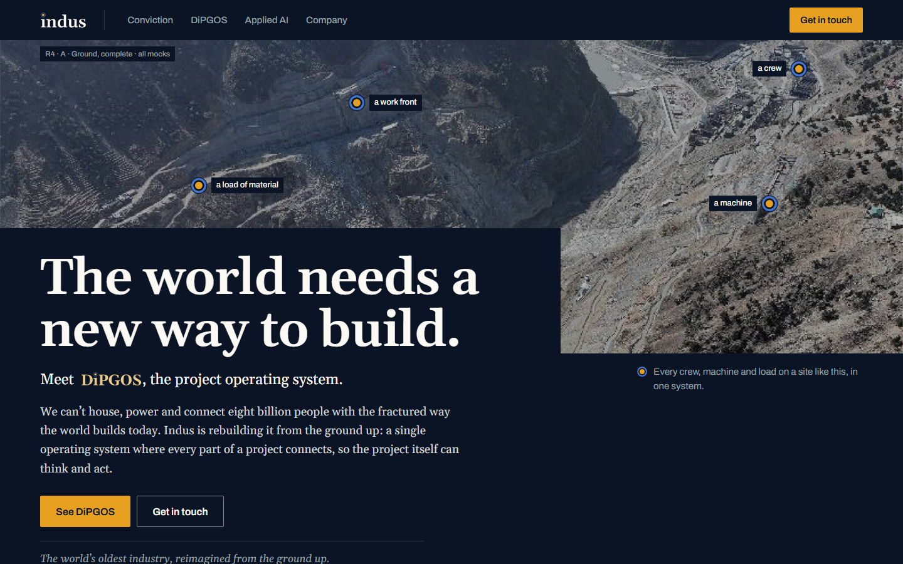
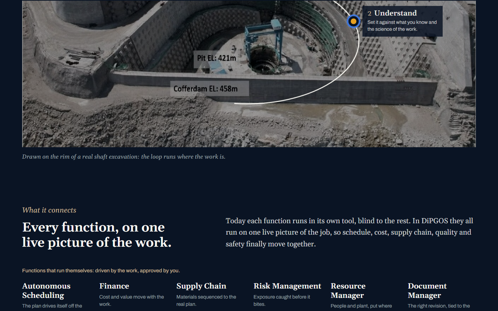
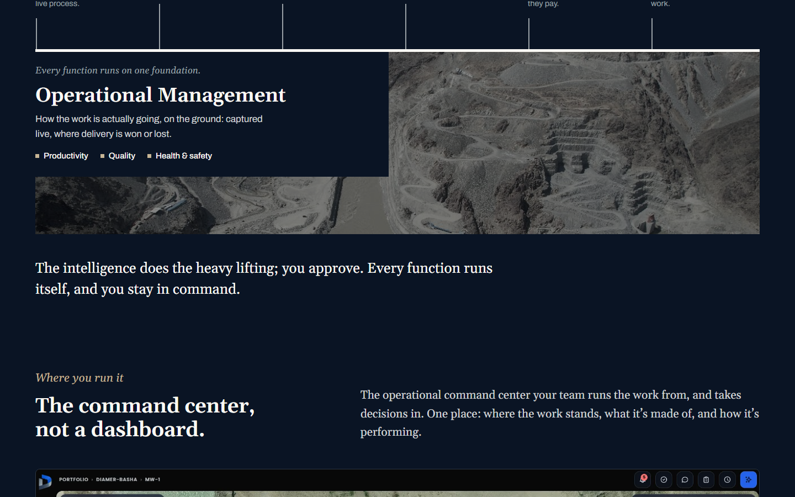
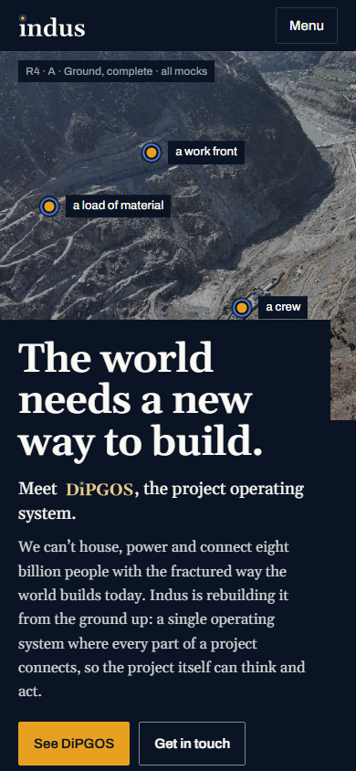
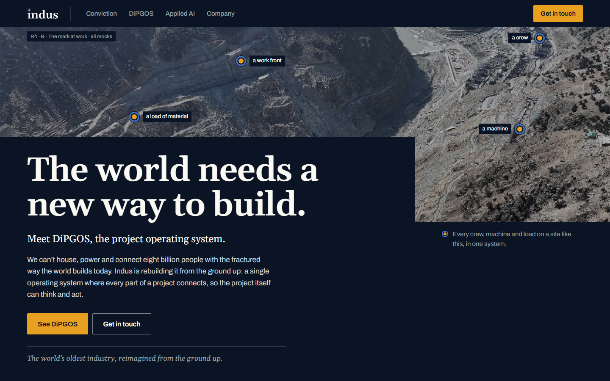
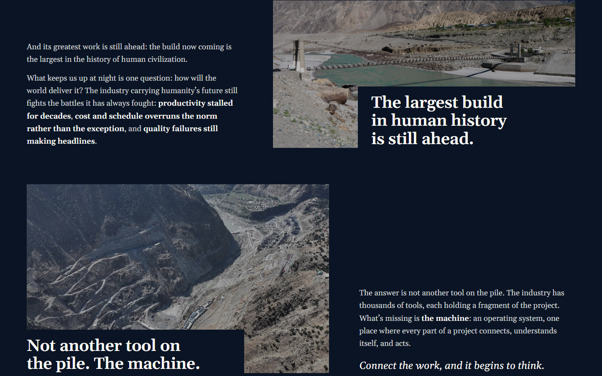
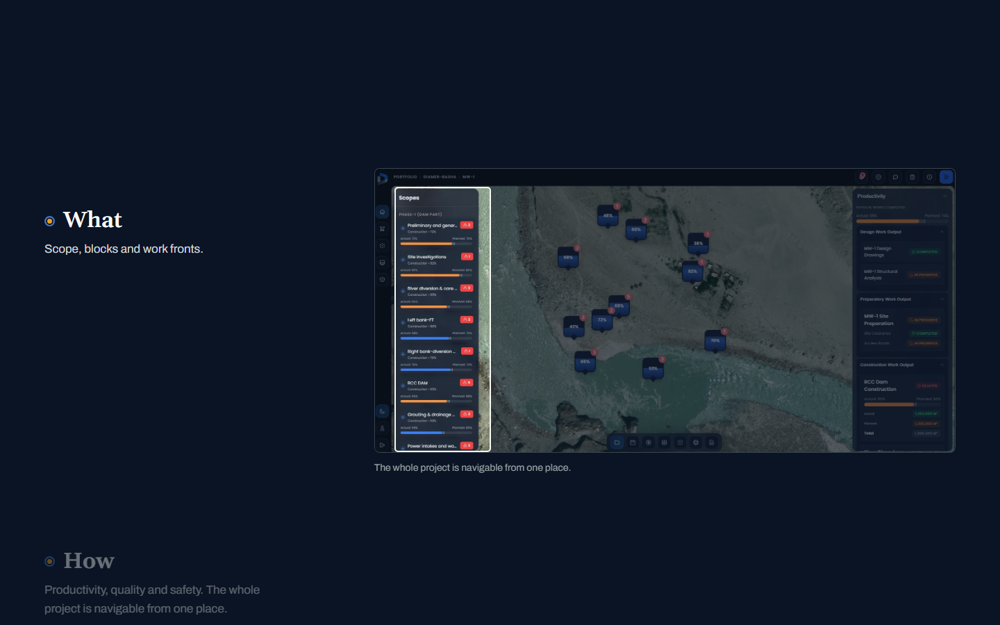
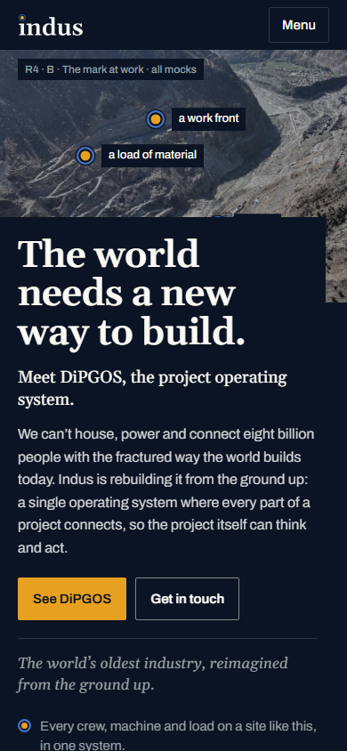

Round 4: R3-B's look, with the live site's whole story back
Your round-3 feedback: B's look and site photography were right, but too much of the marketing content was lost, and DiPGOS disappeared. Both round-4 mocks keep every block of the live site and add the content plan's tender-to-site modules and Mutlashi. They come to about 1,000–1,200 words, near the live site's length. DiPGOS now has its own nav item, a line in the hero, and the full lockup opening its chapter. The two mocks differ in how they draw the system.
Content checklist: CONTENT.md · Brief: BRIEF.md · Round 3: earlier mocks
R4 · A · Ground, complete
Each idea drawn on the ground itself




- How it thinks
- The five-step loop is drawn around the rim of a real circular shaft pit (Tarbela), with an i-dot at each step. It draws once when it comes into view.
- What it connects
- Six functions stand on one heavy grade line. Below it sits the foundation, Operational Management (productivity, quality, health & safety), on a strip of the excavated abutments.
- Command centre
- The real capture, with Where / What / How pins. On phones it becomes three zoomed crops.
- Tender to site
- A horizontal line with the module names (CPDS, Atom Manager, ACCS) spanning their steps, and AOS dashed as "later".
- Applied AI
- The four layers are drawn as lifts of a dam's cross-section, with Physics at the base: "we build the ground", literally.
- Size
- About 1,200 words, 6 sections, 15 phone screens.
Open R4-A
R4 · B · Ground, the mark at work
The DiPGOS mark explains the system




- Conviction
- Three statements, three site photographs: $15 trillion a year; the largest build in history is still ahead; not another tool on the pile, but the machine.
- The mark at work
- One large, flat DiPGOS mark with a toggle. How it thinks puts Sense → Act on the nodes and closes the ring. What it connects moves the six functions onto the nodes, and the amber core becomes the foundation, Operational Management.
- Command centre
- The capture stays in place while Where, What and How scroll past. A frame moves to each region and dims the rest. On phones it becomes three crops.
- Tender to site
- A numbered list of the six steps with their modules, beside a tall aerial crop.
- Applied AI
- The four layers are drawn as rock strata, with Physics at the base.
- Size
- About 1,000 words, 6 sections, 14 phone screens.
Open R4-B
What came back from the live site
| Live-site block | R4-A | R4-B |
|---|
| Hero: "The world needs a new way to build.", the 8-billion lead, the tagline | Kept, plus "Meet DiPGOS" | Kept, plus "Meet DiPGOS" |
|---|
| Conviction: $15T, the largest build ahead, three battles, "the machine" | $15T on a photo; the battles as a list | Three photo statements, plus the full text |
|---|
| DiPGOS: lockup, "Your whole project, running as one system" | Lockup, plus a key to the mark | Lockup |
|---|
| How it thinks: Sense → Act loop | Drawn on the pit | On the mark |
|---|
| Six functions on the Operational Management foundation | Ground section | On the mark (toggle) |
|---|
| Command centre: Where / What / How, Action & command, Decision intelligence | Pins | Pinned walkthrough |
|---|
| Applied & Physical AI: four layers, three paragraphs | Dam lifts | Rock strata |
|---|
| Company: founder | Kept, with the gorge photo | Kept, with the gorge photo |
|---|
| New: tender → site (CPDS, Atom Manager, ACCS, AOS later) and Mutlashi | Added | Added |
|---|
Needed from you
- A or B, or a mix: which way of drawing each idea you prefer.
- Product screenshots for the placeholder frames (for example a Mutlashi answer with sources).
- Photo rights for the library aerials.
- To confirm before launch: R4-A shows "Named for the river our first projects are built on." Is that true? Can the site say "Running today on an RCC dam in northern Pakistan"? Can the "$15 trillion" figure be sourced? It's carried over from the live site.